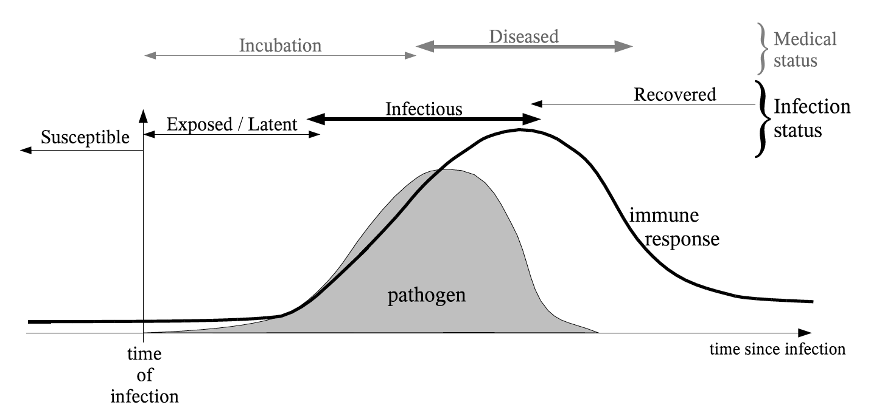

- Some diseases have an latent/exposed period during which individuals are infected but not yet infectious. Examples include pertussis, COVID-19, and Ebola.
- Disease transmission does not occur during the latent period because of low levels of the virus in the host.

- The SEIR model extends the SIR model to include an exposed compartment, \(E\).
- \(E\): infected but are not yet infectious.
- Individuals stay in \(E\) for \(1/\sigma\) days before moving to \(I\).

Model equations: \[\begin{align*} \frac{dS}{dt} & = -\beta S I \\ \frac{dE}{dt} & = \beta S I - \color{orange}{\sigma E} \\ \frac{dI}{dt} & = \color{orange}{\sigma E} - \gamma I \\ \frac{dR}{dt} & = \gamma I \end{align*}\]
SEIR model with births and deaths
Let’s relax the assumption about births and deaths in the population.
We will assume that the susceptible population is replenished with new individuals at a constant rate, \(\mu\).
We will also assume that everyone dies at a constant rate, \(\mu\).
Our model schematic now looks like this:

Explain in terms of inflows and outflows
The model equations now become:
\[\begin{align} \frac{dS}{dt} & = \color{green}{\mu N} - \beta S I - \color{blue}{\mu} S \\ \frac{dE}{dt} & = \beta S I - \sigma E - \color{blue}{\mu} E \\ \frac{dI}{dt} & = \sigma E - \gamma I - \color{blue}{\mu} I \\ \frac{dR}{dt} & = \gamma I - \color{blue}{\mu} R \end{align}\]The R0 of the SEIR Model
Beyond the SIR model, calculating \(R0\) for more complex models can be challenging due to the presence of multiple compartments.
For complex models, we use the next generation matrix approach [@diekmann1990definition; @diekmann2010construction].
Using the next-generation matrix approach, we can show that the SEIR model has \[R0 = \dfrac{\beta \sigma}{(\gamma + \mu)(\sigma + \mu)}\].
Numerical simulations
R Practicals
We can use the same approach as the SIR model to simulate the SEIR model.
Let’s do a code walk through in R using the
01_seir.Rmdscript.